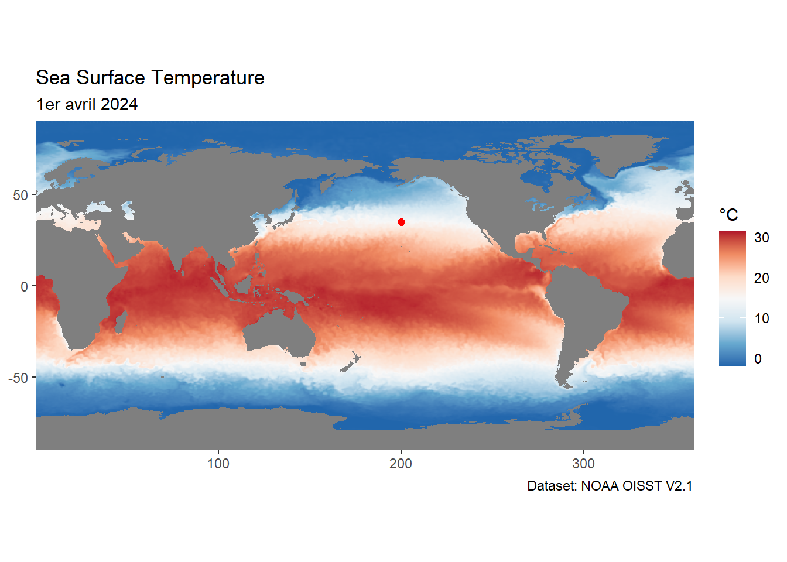
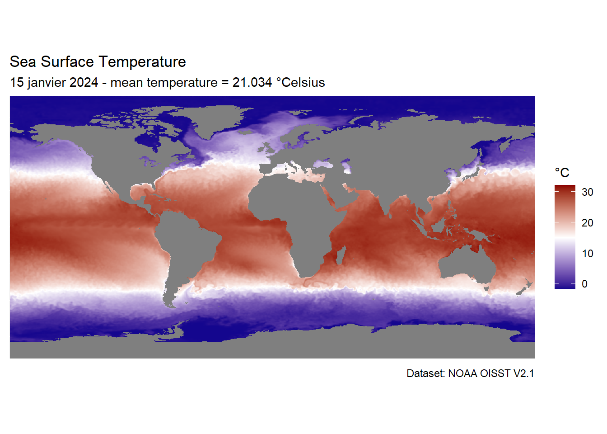

libs <- c(
"ncdf4",
"tidyverse",
"terra",
"sf"
)
#install missing libraries
installed_libs <- libs %in% rownames(installed.packages())
if (any(installed_libs == FALSE)) {
install.packages(libs[!installed_libs])
}
#load libraries
invisible(lapply(libs, library, character.only = TRUE))4 Données SST du 6 janvier 2024
4.1 Exploration du fichier NetCDF (comme décrit ici)
La connexion au fichier NetCDF s’opère via la commande nc_open.
Grâce à elle nous pouvons déjà voir quel type d’informations sont enregistrées.
(nc <- nc_open("DATA/oisst-avhrr-v02r01.20240106.nc"))File DATA/oisst-avhrr-v02r01.20240106.nc (NC_FORMAT_NETCDF4):
4 variables (excluding dimension variables):
short sst[lon,lat,zlev,time] (Chunking: [1440,720,1,1]) (Compression: shuffle,level 4)
long_name: Daily sea surface temperature
units: Celsius
_FillValue: -999
add_offset: 0
scale_factor: 0.00999999977648258
valid_min: -300
valid_max: 4500
short anom[lon,lat,zlev,time] (Chunking: [1440,720,1,1]) (Compression: shuffle,level 4)
long_name: Daily sea surface temperature anomalies
units: Celsius
_FillValue: -999
add_offset: 0
scale_factor: 0.00999999977648258
valid_min: -1200
valid_max: 1200
short err[lon,lat,zlev,time] (Chunking: [1440,720,1,1]) (Compression: shuffle,level 4)
long_name: Estimated error standard deviation of analysed_sst
units: Celsius
_FillValue: -999
add_offset: 0
scale_factor: 0.00999999977648258
valid_min: 0
valid_max: 1000
short ice[lon,lat,zlev,time] (Chunking: [1440,720,1,1]) (Compression: shuffle,level 4)
long_name: Sea ice concentration
units: %
_FillValue: -999
add_offset: 0
scale_factor: 0.00999999977648258
valid_min: 0
valid_max: 100
4 dimensions:
time Size:1 *** is unlimited ***
long_name: Center time of the day
units: days since 1978-01-01 12:00:00
zlev Size:1
long_name: Sea surface height
units: meters
positive: down
actual_range: 0, 0
lat Size:720
long_name: Latitude
units: degrees_north
grids: Uniform grid from -89.875 to 89.875 by 0.25
lon Size:1440
long_name: Longitude
units: degrees_east
grids: Uniform grid from 0.125 to 359.875 by 0.25
37 global attributes:
Conventions: CF-1.6, ACDD-1.3
title: NOAA/NCEI 1/4 Degree Daily Optimum Interpolation Sea Surface Temperature (OISST) Analysis, Version 2.1 - Final
references: Reynolds, et al.(2007) Daily High-Resolution-Blended Analyses for Sea Surface Temperature (available at https://doi.org/10.1175/2007JCLI1824.1). Banzon, et al.(2016) A long-term record of blended satellite and in situ sea-surface temperature for climate monitoring, modeling and environmental studies (available at https://doi.org/10.5194/essd-8-165-2016). Huang et al. (2020) Improvements of the Daily Optimum Interpolation Sea Surface Temperature (DOISST) Version v02r01, submitted.Climatology is based on 1971-2000 OI.v2 SST. Satellite data: Pathfinder AVHRR SST, Navy AVHRR SST, and NOAA ACSPO SST. Ice data: NCEP Ice and GSFC Ice.
source: ICOADS, NCEP_GTS, GSFC_ICE, NCEP_ICE, Pathfinder_AVHRR, Navy_AVHRR, NOAA_ACSP
id: oisst-avhrr-v02r01.20240106.nc
naming_authority: gov.noaa.ncei
summary: NOAAs 1/4-degree Daily Optimum Interpolation Sea Surface Temperature (OISST) (sometimes referred to as Reynolds SST, which however also refers to earlier products at different resolution), currently available as version v02r01, is created by interpolating and extrapolating SST observations from different sources, resulting in a smoothed complete field. The sources of data are satellite (AVHRR) and in situ platforms (i.e., ships and buoys), and the specific datasets employed may change over time. At the marginal ice zone, sea ice concentrations are used to generate proxy SSTs. A preliminary version of this file is produced in near-real time (1-day latency), and then replaced with a final version after 2 weeks. Note that this is the AVHRR-ONLY DOISST, available from Oct 1981, but there is a companion DOISST product that includes microwave satellite data, available from June 2002
cdm_data_type: Grid
history: Final file created using preliminary as first guess, and 3 days of AVHRR data. Preliminary uses only 1 day of AVHRR data.
date_modified: 2024-01-21T09:12:00Z
date_created: 2024-01-21T09:12:00Z
product_version: Version v02r01
processing_level: NOAA Level 4
institution: NOAA/National Centers for Environmental Information
creator_url: https://www.ncei.noaa.gov/
creator_email: oisst-help@noaa.gov
keywords: Earth Science > Oceans > Ocean Temperature > Sea Surface Temperature
keywords_vocabulary: Global Change Master Directory (GCMD) Earth Science Keywords
platform: Ships, buoys, Argo floats, MetOp-A, MetOp-B
platform_vocabulary: Global Change Master Directory (GCMD) Platform Keywords
instrument: Earth Remote Sensing Instruments > Passive Remote Sensing > Spectrometers/Radiometers > Imaging Spectrometers/Radiometers > AVHRR > Advanced Very High Resolution Radiometer
instrument_vocabulary: Global Change Master Directory (GCMD) Instrument Keywords
standard_name_vocabulary: CF Standard Name Table (v40, 25 January 2017)
geospatial_lat_min: -90
geospatial_lat_max: 90
geospatial_lon_min: 0
geospatial_lon_max: 360
geospatial_lat_units: degrees_north
geospatial_lat_resolution: 0.25
geospatial_lon_units: degrees_east
geospatial_lon_resolution: 0.25
time_coverage_start: 2024-01-06T00:00:00Z
time_coverage_end: 2024-01-06T23:59:59Z
metadata_link: https://doi.org/10.25921/RE9P-PT57
ncei_template_version: NCEI_NetCDF_Grid_Template_v2.0
comment: Data was converted from NetCDF-3 to NetCDF-4 format with metadata updates in November 2017.
sensor: Thermometer, AVHRRLes dimensions
les variables principales sont discriminées suivant plusieurs dimensions.
Ici, ce sont :
- lon : la longitude (de taille 1440)
- lat : la latitude (de taille 720)
- zlev : La hauteur de la surface de l’eau de mer
- time : temps central de la journée
Il est possible d’avoir accès aux données des dimensions via la fonction ncvar_get et l’accès aux attributs avec la fonction ncatt_get
# get info about latitudes
lat <- ncvar_get(nc, "lat")
(lat_units <- ncatt_get(nc, "lat", "units"))$hasatt
[1] TRUE
$value
[1] "degrees_north"# get info about longitudes
lon <- ncvar_get(nc, "lon")
(lon_units <- ncatt_get(nc, "lon", "units"))$hasatt
[1] TRUE
$value
[1] "degrees_east"# get info about time
time <- ncvar_get(nc, "time")
(time_units <- ncatt_get(nc, "time", "units"))$hasatt
[1] TRUE
$value
[1] "days since 1978-01-01 12:00:00"time_as_date <- as.Date(time, origin = "1978-01-01 12:00:0", tz = "UTC")
# get info about zlev
zlev <- ncvar_get(nc, "zlev")
(zlev_units <- ncatt_get(nc, "zlev", "units"))$hasatt
[1] TRUE
$value
[1] "meters"Les variables principales
Nous avons quatre variables stockées dans le fichier :
- sst : la température quotidienne de la surface de l’eau
- anom : les anomalies quotidiennes de température de surface de l’eau
- err : estimated error standard deviation of analysed_sst
- ice : la concentration en glace
(nc_var <- names(nc$var))[1] "sst" "anom" "err" "ice" # get info about variable attribute
get_var_attribute <- function(var, attribute) {
nc_var <- names(nc$var)
if (!(var %in% nc_var)) {
message(paste("la variable", var, "est inexistante"))
} else {
ln <- ncatt_get(nc, var, attname = attribute)
ifelse(ln$hasatt, ln$value, paste("pas d'attribut ", attribute))
}
}
# long names
get_var_long_name <- function() {
vapply(
nc_var,
get_var_attribute,
FUN.VALUE = character(1),
"long_name"
)
}
((get_var_long_name())) sst
"Daily sea surface temperature"
anom
"Daily sea surface temperature anomalies"
err
"Estimated error standard deviation of analysed_sst"
ice
"Sea ice concentration" # source
get_var_units <- function() {
vapply(
nc_var,
get_var_attribute,
FUN.VALUE = character(1),
"units"
)
}
((get_var_units())) sst anom err ice
"Celsius" "Celsius" "Celsius" "%" # fill value
get_var_fill_value <- function() {
vapply(
nc_var,
get_var_attribute,
FUN.VALUE = numeric(1),
"_FillValue"
)
}
((get_var_fill_value())) sst anom err ice
-999 -999 -999 -999 Les attributs globaux du fichier
att <- c("title", "institution", "source", "references", "history", "Conventions")
get_global_attribute <- function(att) {
ncatt_get(nc, 0, att)$value
}
(global_attributes <- vapply(att, get_global_attribute, FUN.VALUE = character(1))) title
"NOAA/NCEI 1/4 Degree Daily Optimum Interpolation Sea Surface Temperature (OISST) Analysis, Version 2.1 - Final"
institution
"NOAA/National Centers for Environmental Information"
source
"ICOADS, NCEP_GTS, GSFC_ICE, NCEP_ICE, Pathfinder_AVHRR, Navy_AVHRR, NOAA_ACSP"
references
"Reynolds, et al.(2007) Daily High-Resolution-Blended Analyses for Sea Surface Temperature (available at https://doi.org/10.1175/2007JCLI1824.1). Banzon, et al.(2016) A long-term record of blended satellite and in situ sea-surface temperature for climate monitoring, modeling and environmental studies (available at https://doi.org/10.5194/essd-8-165-2016). Huang et al. (2020) Improvements of the Daily Optimum Interpolation Sea Surface Temperature (DOISST) Version v02r01, submitted.Climatology is based on 1971-2000 OI.v2 SST. Satellite data: Pathfinder AVHRR SST, Navy AVHRR SST, and NOAA ACSPO SST. Ice data: NCEP Ice and GSFC Ice."
history
"Final file created using preliminary as first guess, and 3 days of AVHRR data. Preliminary uses only 1 day of AVHRR data."
Conventions
"CF-1.6, ACDD-1.3" 4.2 Exploration des variables
La variable sst est enregistrée en tant que matrix, array avec les dimensions 1440, 720
La valeur enregistrée aux coordonnées [800, 500] vaut sst[800, 500] = 15.3599997
Elle correspond normalement à la température pour la longitude lon[800] = 199.875 et la latitude lat[500] = 34.875
lon_800 <- lon[800]
lat_500 <- lat[500]
lonlat <- expand.grid(lon, lat)
tmp_sst <- as.vector(sst)
df_sst <- cbind(lonlat, tmp_sst)
names(df_sst) <- c("lon", "lat", "sst")
head(df_sst) lon lat sst
1 0.125 -89.875 NA
2 0.375 -89.875 NA
3 0.625 -89.875 NA
4 0.875 -89.875 NA
5 1.125 -89.875 NA
6 1.375 -89.875 NAdf_sst |> dplyr::filter(lon == lon_800 & lat == lat_500) -> df_sst_800_5004.3 Affichage de la carte des données sst
Avec positionnement en rouge du point de test donné en exemple :
#|label: plot_sst
df_sst |>
ggplot(aes(x = lon, y = lat, color = sst)) +
geom_point(size = 0.5) +
coord_fixed(expand = FALSE) +
scale_colour_distiller(palette = "RdBu") +
geom_point(
data = df_sst_800_500,
aes(x = lon, y = lat),
color = "red",
size = 2) +
labs(
x = NULL,
y = NULL,
title = "Sea Surface Temperature",
subtitle = "15 janvier 2024",
caption = "Dataset: NOAA OISST V2.1",
color = "°C"
)
4.4 Calcul de moyenne globale
Il semble qu’il faille appliquer un poids fonction de \(\alpha\) en radians pour pondérer les mesures de surface en fonction de la latitude considérée.
Pour calculer ces poids j’ai construit tous les polygones “carrés” de 0.25° de côté suivant un même méridien.
Ces polygones ont pour centre les coordonnées (longitude et latitude) de la mesure SST correspondante.
J’ai ensuite calculé les aires de ces polygones avec le système de coordonnées de référence EPSG:4326 (WGS84).
Les poids relatifs à chaque mesure ont été fixés comme étant les ratio des aires obtenues avec celle de la plus grande aire (aire du polygone situé à l’équateur).
Calcul des poids à affecter aux mesures suivant la latitude associée
# fonction génératrice de "carré géographique" de n degrés de côté
# le point de base (lon, lat) est le point inférieur gauche.
polygone_geo <- function(lon, lat, n) {
polygon_list <- list(rbind(
c(lon, lat),
c(lon + n, lat),
c(lon + n, lat + n),
c(lon, lat + n),
c(lon, lat)
))
st_polygon(polygon_list)
}
polygone_sfc <- seq(-90, 89.75, by = 0.25) |>
map(\(x) polygone_geo(lon = 0, lat = x, n = 0.25)) |>
st_sfc(crs = "EPSG:4326")
area_weights <- as.numeric(st_area(polygone_sfc) / max(st_area(polygone_sfc)))
head(area_weights)[1] 0.002181655 0.006544922 0.010908066 0.015271001 0.019633646 0.023995917df_area_weights <- expand.grid(lon, area_weights)
names(df_area_weights) <- c("lon", "w")
w <- df_area_weights$w
df_sst_weights <- cbind(df_sst, w)
df_sst_60S_60N <- df_sst_weights |>
filter(lat >= -60 & lat <= 60)
sst_weighted_mean <- df_sst_60S_60N |>
summarize(wm_sst = weighted.mean(sst, w, na.rm = TRUE))
sst_weighted_mean wm_sst
1 21.03032Si nous souhaitons centrer la carte sur le méridien de Greenwich, il est nécessaire de translater les longitudes.
#|label: plot_sst_greenwich
df_sst |>
mutate(lon = if_else(lon > 180, lon - 360, lon)) |>
ggplot(aes(x = lon, y = lat, fill = sst)) +
geom_raster() +
scale_fill_gradient2(
low = "darkblue",
mid = "white",
high = "darkred",
midpoint = 15
) +
coord_fixed(expand = FALSE) +
#scale_colour_distiller(palette = "RdBu") +
labs(
x = NULL,
y = NULL,
title = "Sea Surface Temperature",
subtitle = paste0(
"15 janvier 2024 - mean temperature = ",
round(sst_weighted_mean, 3),
" °Celsius"
),
caption = "Dataset: NOAA OISST V2.1",
fill = "°C",
) +
theme(
axis.text = element_blank(),
axis.ticks = element_blank(),
# panel.background = element_rect(fill = "black"),
# plot.background = element_rect(fill = "black")
)